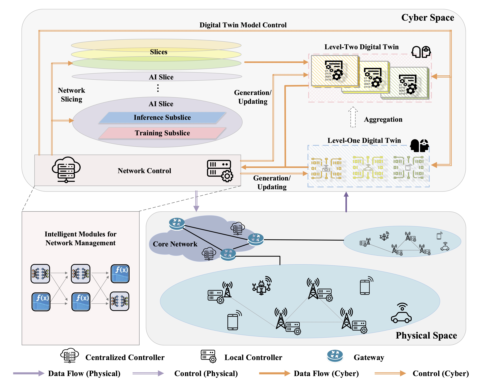
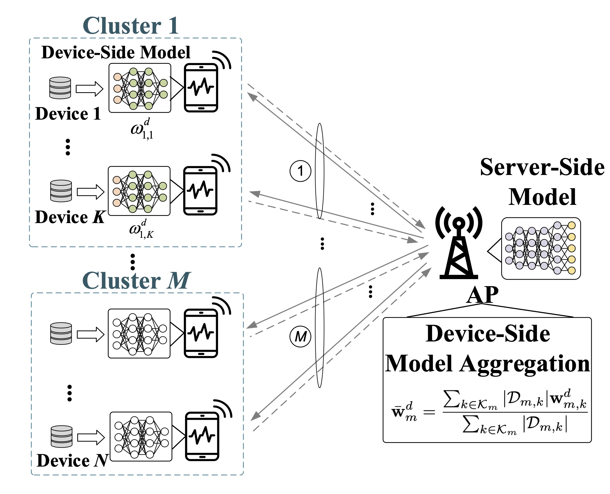
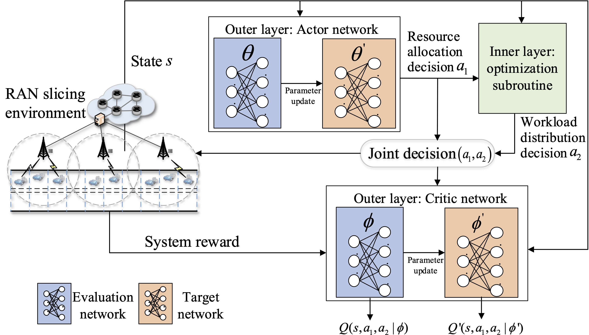
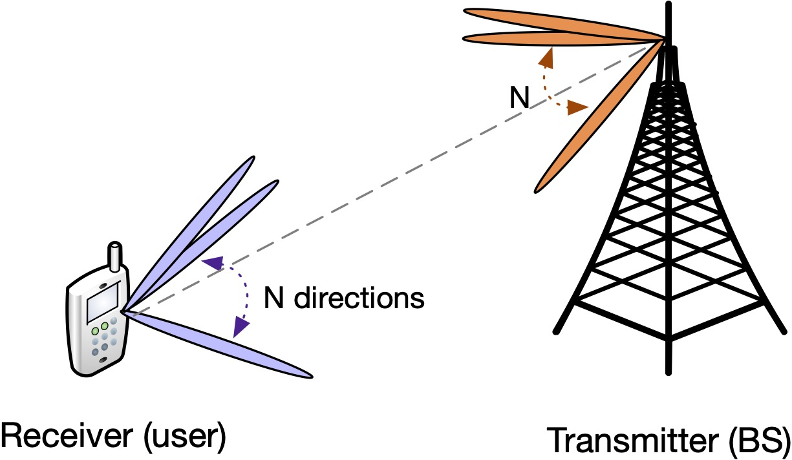

|
Research Directions
|
|  |
|
Recent Publications
[Talk] 6G: Holistic Network Virtualization and Intelligence, by Prof. Xuemin Shen
[COMST’22] X. Shen, J. Gao, W. Wu, M. Li, C. Zhou, and W. Zhuang, “Holistic Network Virtualization and Pervasive Network Intelligence for 6G,” IEEE Communications Surveys and Tutorials, vol. 24, no. 1, pp. 1-30, 1st. Quart. 2022. (Editor-in-Chief Invited Paper) [bib]
[OJVT’20] X. Shen, J. Gao, W. Wu, K. Lyu, M. Li, W. Zhuang, X. Li, and J. Rao, “AI-assisted Network-slicing based Next-generation Wireless Networks,” IEEE Open Journal of Vehicular Technology, vol. 1, no. 1, pp. 45-66, Jan. 2020. (Editor-in-Chief Invited Paper) [bib]
[WCM’22] W. Wu, C. Zhou, M. Li, H. Wu, H. Zhou, N. Zhang, X. Shen, and W. Zhuang, “AI-Native Network Slicing for 6G Networks,” IEEE Wireless Communications, vol. 29, no. 1, pp. 96–103, Feb. 2022. [bib]
[GLOBECOM’22] X. Huang, C. Zhou, W. Wu, M. Li, H. Wu, and X. Shen, “Personalized QoE Enhancement for Adaptive Video Streaming: A Digital Twin-Assisted Scheme,” in Proc. IEEE GLOBECOM, Rio de Janeiro, Brazil, Dec. 4-8, 2022.
In 6G networks, artificial intelligence (AI) will penetrate and be integrated into every facet of the network, including end users, network edge, and cloud, resulting in pervasive network intelligence. The pervasive network intelligence can be enabled from two perspectives: AI for networking and networking for AI.
Networking for AI is to design and optimize 6G networks to facilitate service-oriented AI applications, i.e., AI services.
|  |
|
Recent Publications
[JSAC’22] W. Wu, M. Li, K. Qu, C. Zhou, X. Shen, W. Zhuang, X. Li, and W. Shi, “Split Learning over Wireless Networks: Parallel Design and Resource Management,” IEEE Journal on Selected Areas in Communications (JSAC), to appear, 2022.
[Patent’22] X. Shen, W. Wu, M. Li, K. Qu, C. Zhou, W. Zhuang, and X. Li, “Systems and Methods for Cluster-Based Parallel Split Learning.” Canada, 92011852PCT01, 20220330. Patent Status: Pending.
[TII’21] W. Wu, P. Yang, W. Zhang, C. Zhou, and X. Shen, “Accuracy-Guaranteed Collaborative DNN Inference in Industrial IoT via Deep Reinforcement Learning,” IEEE Transactions on Industrial Informatics, vol. 17, no. 7, pp. 4988–4998, July 2021. [bib]
[Book’22] W. Wu, Y. Tang, P. Yang, W. Zhang, and N. Zhang, “Collaborative Deep Neural Network Inference via Mobile Edge Computing,” Broadband Communications, Computing, and Control for Ubiquitous Intelligence, pp. 263-190, Editors: L. Cai, B. L. Mark, and J. Pan, Springer, 2022. (ISBN-10: 3030980634, ISBN-13: 9783030980634) [pdf]
[JSAC’21] W. Zhang, D. Yang, W. Wu, H. Peng, N. Zhang, H. Zhang, and X. Shen, “Optimizing Federated Learning in Distributed Industrial IoT: A Multi-Agent Approach,” IEEE Journal on Selected Areas in Communications, vol. 39, no. 12, pp. 3688-3703, Dec. 2021. [bib]
AI for networking is to leverage and customize AI-based methods, e.g., reinforcement learning and deep learning, for complex 6G network management. In wireless networks, service demands exhibit spatial and temporal dynamics due to traffic burstiness and user mobility. It is of paramount importance to improve the utilization of heterogeneous sensing, communication, computing, storage, and control resources for determining fine-grained user-centric networking solutions.
|  |
|
Recent Publications
[JSAC’21] W. Wu, N. Chen, C. Zhou, M. Li, X. Shen, W. Zhuang, and X. Li, “Dynamic RAN Slicing for Service-Oriented Vehicular Networks via Constrained Learning,” IEEE Journal on Selected Areas in Communications, vol. 39 no. 7, pp. 2076–2089, July 2021. [bib]
[ICCC’22] W. Wu, K. Qu, P. Yang, N. Zhang, X. Shen, and W. Zhuang, “Cost-Effective Two-Stage Network Slicing for Edge-Cloud Orchestrated Vehicular Networks,” in Proc. IEEE/CIC International Conference on Communications in China (ICCC), Foshan, China, 2022.
[Preprint] Z. Ma, W. Wu, F. Gao, and X. Shen, “Model-Driven Deep Learning for Massive Machine-Type Communications,” submitted to IEEE Transactions on Wireless Communications (TWC), 2022.
[TWC’22] Z. Ma, W. Wu, M. Jian, F. Gao, and X. Shen, “Joint Constellation Design and Multiuser Detection for Grant-Free NOMA,” IEEE Transactions on Wireless Communications, vol. 21, no. 3, pp. 1973–1988, Mar. 2022. [bib]
[TWC’21] C. Zhou, W. Wu, H. He, P. Yang, F. Lyu, N. Cheng, and X. Shen, “Deep Reinforcement Learning for Delay-Oriented IoT Task Scheduling in Space-Air-Ground Integrated Network,” IEEE Transactions on Wireless Communications, vol. 20, no. 2, pp. 911-925, Feb. 2021. [bib]
Millimeter-wave (mmWave) communication at 30 GHz-300 GHz frequency bands has emerged as one of the most promising technologies in future wireless networks, which can offer high data rate connections by exploiting a large swath of spectrum. In mmWave communications, beamforming focusing the radio frequency power in a narrow direction is the key technology to overcome the hostile path loss. However, the distinct high directionality feature of beamforming technology poses many challenges in different network layers: (1) Beam alignment (BA) latency in the physical layer; (2) Medium access control (MAC) performance degradation; and (3) Backhaul congestion in the network layer.
In this research thrust, we are interested in (1) designing presenting an efficient BA algorithm; (2) evaluating and enhancing the 802.11ad MAC performance; and (3) designing an effective backhaul alleviation scheme.
|  |
|
Recent Publications
[Book] P. Yang, W. Wu, N. Zhang, and X. Shen, “Millimeter-Wave Networks: Beamforming Design and Performance Analysis,” Springer Verlag, 2021 (ISBN-10: 3030886298, ISBN-13: 9783030886295), 169 pages. [pdf]
[TWC’19] W. Wu, N. Cheng, N. Zhang, P. Yang, W. Zhuang, and X. Shen, “Fast mmwave Beam Alignment via Correlated Bandit Learning,” IEEE Transactions on Wireless Communications, vol. 18, no. 12, pp. 5894-5908, Dec. 2019. [bib]
[TVT’20] W. Wu, N. Cheng, N. Zhang, P. Yang, K. Aldubaikhy, and X. Shen, “Performance Analysis and Enhancement of Beamforming Training in 802.11ad,” IEEE Transactions on Vehicular Technology, vol. 69, no. 5, pp. 5293-5306, May 2020. [bib]
[TVT’19] W. Wu, N. Zhang, N. Cheng, Y. Tang, K. Aldubaikhy, and X. Shen, “Beef up mmWave Dense Cellular Networks with D2D-Assisted Cooperative Edge Caching,” IEEE Transactions on Vehicular Technology, vol. 68, no. 4, pp. 3890-3904, Apr. 2019. [bib]
[WiOpt’18] W. Wu, Q. Shen, K. Aldubaikhy, N. Cheng, N. Zhang, and X. Shen, “Enhance the edge with beamforming: Performance analysis of beamforming-enabled WLAN,” in Proc. IEEE WiOpt Workshop, Shanghai, China, 2018. [bib]
[ICC’17] W. Wu, Q. Shen, M. Wang, and X. Shen, “Performance Analysis of IEEE 802.11.ad Downlink Hybrid Beamforming,” in Proc. IEEE ICC, Paris, France, 2017. [bib]